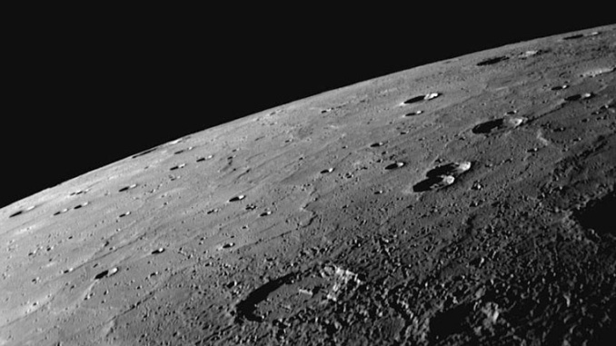

the closest planet to the sun. it circles the sun faster than all the other planets. which is why romans names it after their swift-footed messenger god.
Mercury is the closest planet to the sun. As such, it circles the sun faster than all the other planets, which is why Romans named it after their swift-footed messenger god.
The Sumerians also knew of Mercury since at least 5,000 years ago. It was often associated with Nabu, the god of writing. Mercury was also given separate names for its appearance as both a morning star and as an evening star. Greek astronomers knew, however, that the two names referred to the same body, and Heraclitus, around 500 B.C., correctly thought that both Mercury and Venus orbited the sun, not Earth.
One solar day (the time from noon to noon on the planet’s surface) on Mercury lasts the equivalent of 176 Earth days while the sidereal day (the time for 1 rotation in relation to a fixed point) lasts 59 Earth days. Mercury is nearly tidally locked to the Sun and over time this has slowed the rotation of the planet to almost match its orbit around the Sun. Mercury also has the highest orbital eccentricity of all the planets with its distance from the Sun ranging from 46 to 70 million km.
One of five planets visible with the naked eye a, Mercury is just 4,879 Kilometres across its equator, compared with 12,742 Kilometres for the Earth.
Even though the planet is small, Mercury is very dense. Each cubic centimetre has a density of 5.4 grams, with only the Earth having a higher density. This is largely due to Mercury being composed mainly of heavy metals and rock.
As the iron core of the planet cooled and contracted, the surface of the planet became wrinkled. Scientist have named these wrinkles, Lobate Scarps. These Scarps can be up to a mile high and hundreds of miles long.